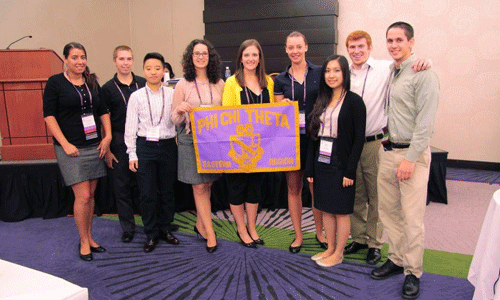

- One, Big, Happy Family.
- Have a Seat with our Chairs!
- Meet our Exec Board!
- Mixing Business with Pleasure.
- Staying Classy all over the East Coast!
- The top of the top. Nationals!
 Come closer. We have Candy.
Come closer. We have Candy.
Come closer. We have Candy.Welcome, and thank you for your interest in the University of Maryland’s Alpha Mu Chapter of Phi Chi Theta! We are proud to say that we are the Robert H. Smith School’s original co-ed Business and Economics Fraternity. With over sixty members, we are committed to sharpening our professional skills while building lifelong friendships.
I would like to invite you to explore our website and check out everything that our chapter has to offer. With an extensive network of alumni, access to exclusive networking events, and a supportive community of brothers and sisters, Phi Chi Theta is truly the premier business and economics fraternity at the University of Maryland.
Please feel free to contact us with any questions you may have! For those of you with a passion for business or economics, I hope to see you at our Fall 2012 Recruitment!
Sincerely,
Hayley Brown President, 2012 Phi Chi Theta - Alpha Mu hayleyhbrown@gmail.com
Want to learn more about Phi Chi Theta? Check out the PCT Nationals website!